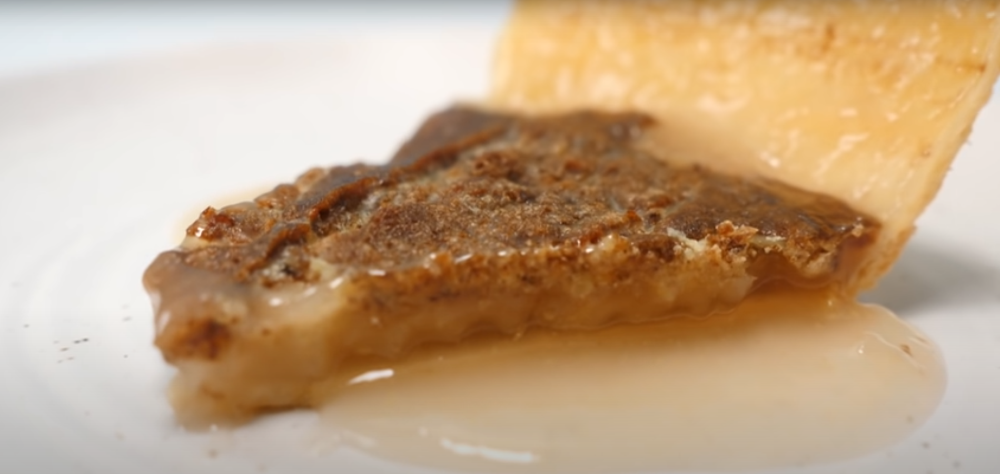

You love coke, you love pie, you're gonna love coke pie!

All the sugar baby!!
Derived from the water pie made during the great 'murican depression,
this coke pie is the opposite of depression. With all the sugar your healthy
body needs and goo of what seems to look like male ejaculation, this coke pie
will fill your sane little tummy with joy!
Things required:
- Coke (You can replace this with sprite, fanta or whatever floats your boat)
- Fine sugar
- Pie dough base
- Flour
- Vanilla extract
- Cinnamon
- Butter
Steps:
Follow along to get even more mental trauma and maybe even an eating disorder, oh! the joy of pies.
Make sure to say OH MA GAASH! every minute to show your enthusiasm!
- Add the pie base to a pie making thingy and pour a can of coke
- Mix a large cup of sugar enough to feed an american family for a night and watch the coke bubble up
- Add enough flour to feed an entire indian family and make sure you don't mix it, just let it clump
- Mix in the vanilla extract and cinnamon
- Grate the butter and mix it cause coke and butter go really well together
- Wrap that tasty mix with foil and take a long hard look at yourself in the mirror
- Bake it at high heat
Have a pienstastic day !!
Homepage